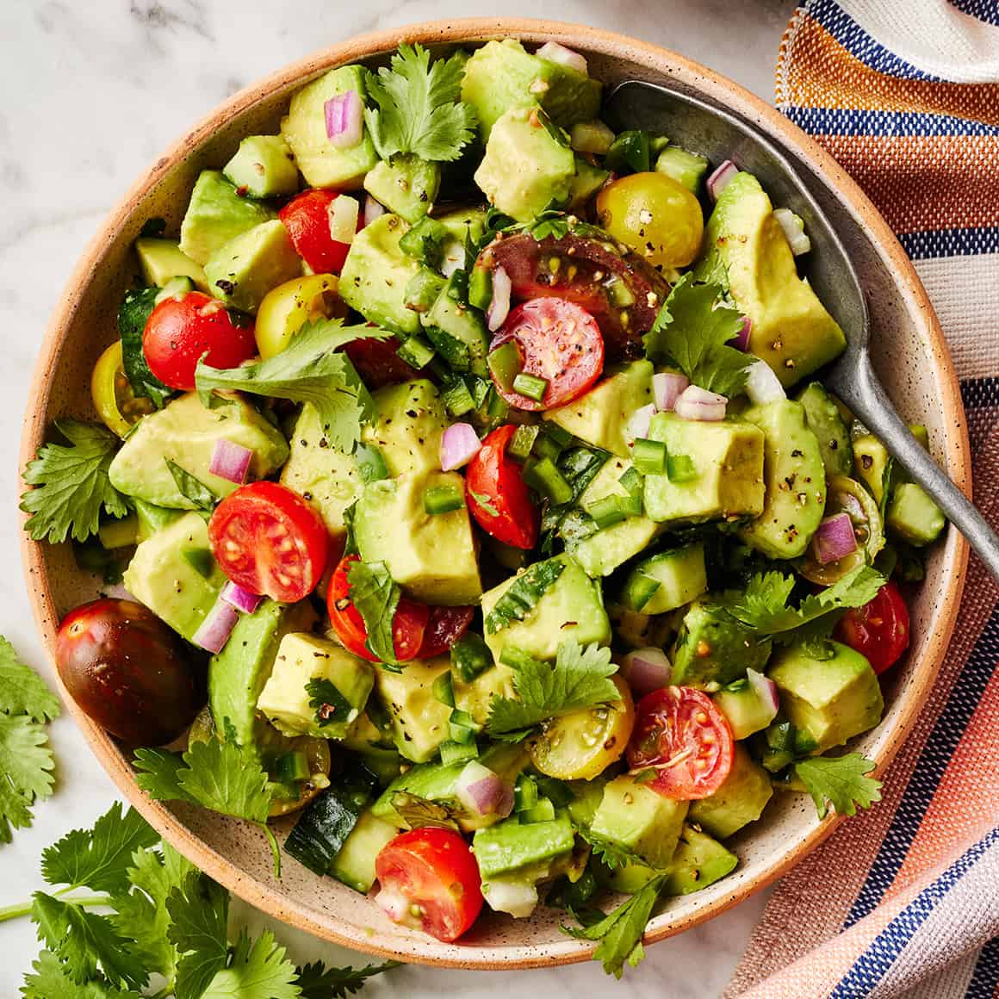

Avocado Salad Recipe

Description
This is a simple recipe for Avocado Salad that is easy to make and tastes delicious.This avocado salad is a delicious combination of ripe avocados, sweet onions, fresh tomatoes, and cilantro. It's dressed with a simple vinaigrette made with olive oil, lime juice, and salt.
This recipe is so easy to make and very colorful — I think you'll like it! It is perfect for breakfast or as a snack.
The salad is fresh and flavorful, with a hint of lime and cilantro. You can add nuts or cheese if you like, or leave them out for a classic avocado salad.
Enjoy!
| Prep Time: |
Total Time: |
Servings: |
| 10 minutes |
10 minutes |
4 servings |
Ingredients
You likely already have all the ingredients you'll need for this salad recipe on hand.
If not, here's what to add to your grocery list:
- Avocado: This recipe starts with two peeled, pitted, and diced avocados.
- Tomatoes: Fresh tomatoes add color and flavor to the salad.
- Onion: Sweet onion adds a mild bite.
- Cilantro: Fresh cilantro adds a pop of color and flavor.
- Lime juice: Lime juice adds brightness and acidity to the salad.
- Olive oil: Olive oil adds richness and flavor to the vinaigrette.
- Salt: A pinch of salt enhances the overall flavor.
- Bell pepper: A chopped green bell pepper gives the salad a welcome crunch.
- Seasonings:Simply season the avocado salad with just salt and pepper.
Steps to Make Avocado Salad
It's really simple:
- Peel and dice the avocados, tomatoes, and onion.
- Chop the cilantro and bell pepper.
- In a large bowl, combine the avocados, tomatoes, onion, cilantro, and bell pepper.
- In a small bowl, whisk together the lime juice, olive oil, salt, and pepper.
- Pour the vinaigrette over the salad and toss gently to combine.
- Season the salad with additional salt and pepper to taste.
- Chill the salad for at least 30 minutes before serving.
Serve this Serve this salad as a fresh summer side dish or even as a chunky dip with tortilla chips and enjoy!
Nutrition Facts (per servings)
| 126 |
10g |
10g |
2g |
| Calories |
Carbohydrates |
Fat |
Protein |
Home